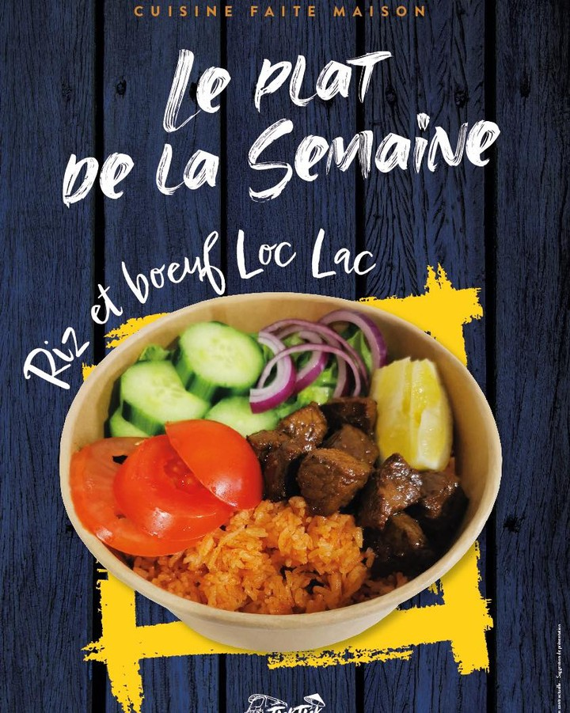
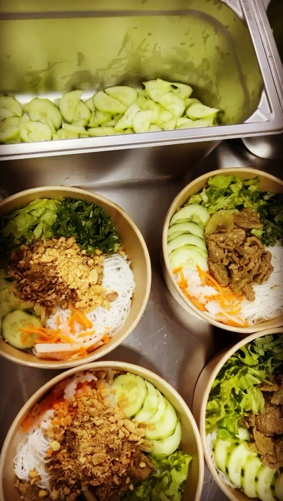
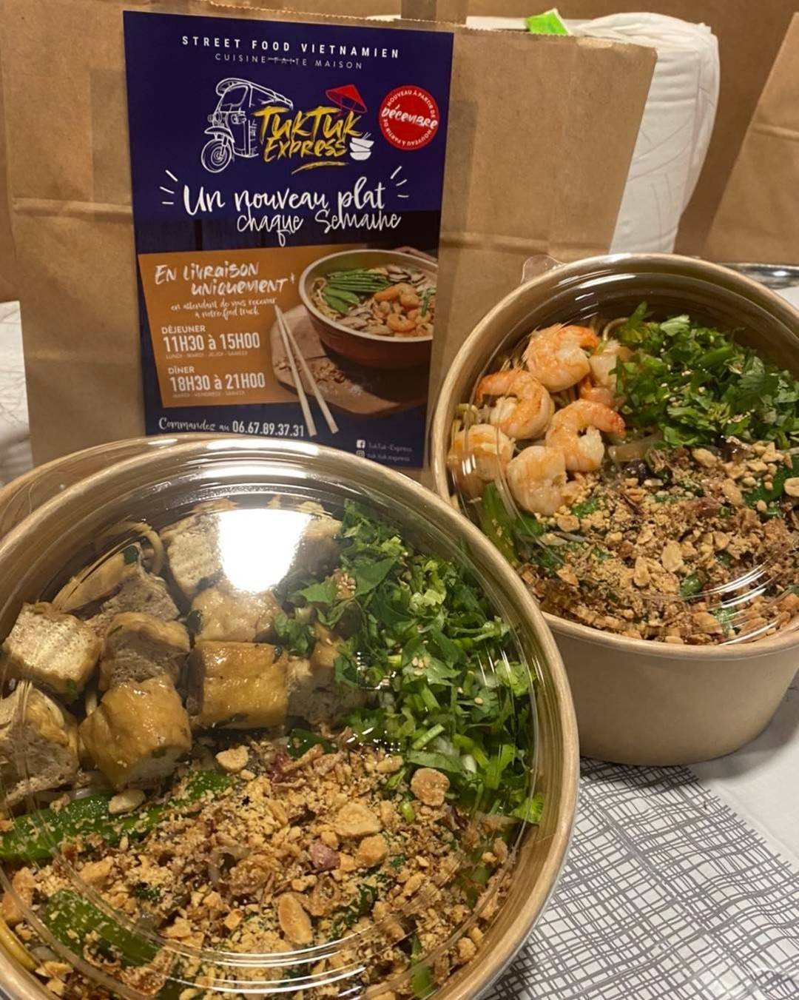

"Merci TukTuk-Express, Bo bun poulet excellent "
"Franchement tout est parfait t'es nems c'est une tuerie merci."
"Nous nous sommes REGALES. Les nouilles sautées aux creveettes ou au tofu étaient excellentes, fraicheur et saveur garanties. Quant aux nems aux poulet, c'est juste une tuerie..."
"Merci la famille TukTuk-Express, pour ce repas exquis, délicieux avec des produits de qualité…"
"Merci TukTuk-Express, Bo bun poulet excellent "
"Franchement tout est parfait t'es nems c'est une tuerie merci."
Une selection de nos Spécialités
Nouveau plat CHAQUE Semaine
Pâtes aux Crevettes
Un mélange savoureux de crevettes, accompagnées de légumes croquants et d'une sauce parfumée au gingembre.
BEST SELLER

Riz et bœuf Loc Lac
Le grand classique ! De tendres dés de bœuf sautés au wok, servis avec son riz rouge emblématique.

Bún bò Nam Bộ
Une salade complète composée de vermicelles de riz, de bœuf sauté minute et de nems croustillants.

Bobun bœuf
La version traditionnelle de la salade de vermicelles, mettant à l'honneur un bœuf mariné et sauté.

Banh Mi
Le sandwich emblématique dans une baguette croustillante, garni de viandes savoureuses.

Mì xào tôm
Nouilles sautées généreuses accompagnées de crevettes et de légumes frais.